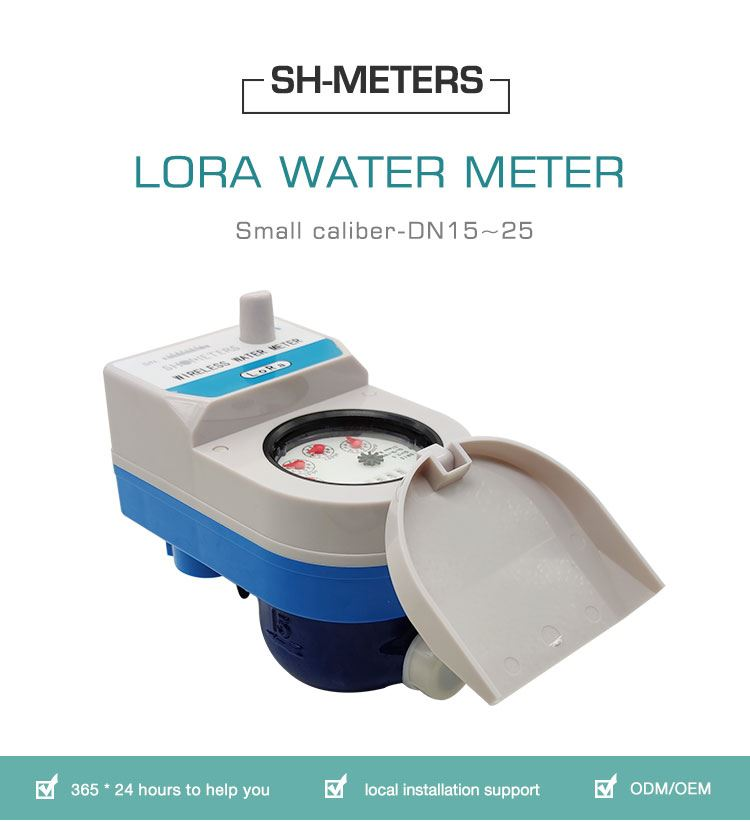
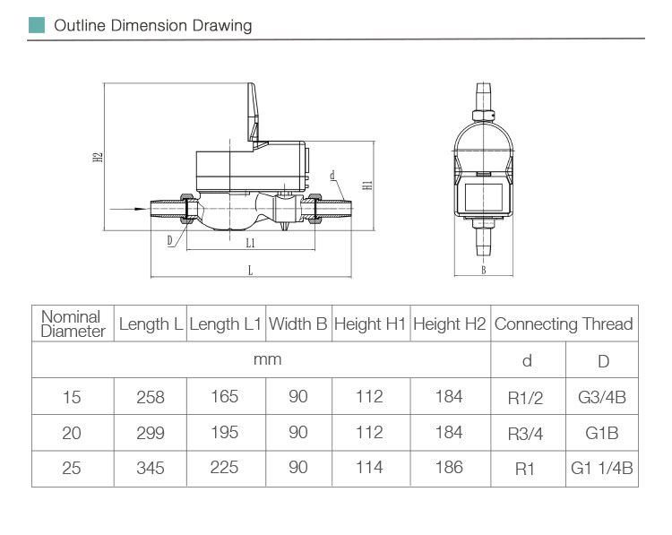

E-mail:
info@sh-meters.comCall Us:
+86 13131984716

The LORA wireless remote water meter management platform includes functions such as account management, report installation management, equipment management, query management, smart settings, and payment management.
The LORA wireless remote water meter management platform includes functions such as account management, report installation management, equipment management, query management, smart settings, and payment management. The power consumption, transmission distance, anti-interference and other requirements of wireless meter reading adopt the current technologically advanced LORA spread spectrum modulation wireless transmission technology. At the same time, combined with years of water meter industry application experience, a strong and reliable wireless meter reading transmission protocol is designed. An intelligent LORA wireless remote water meter system with high reliability, convenient system expansion, simple installation and maintenance, and high meter reading success rate is formed.

Features:
◆User management system: area/user add, modify, delete, etc.
◆Adopt advanced micro-power wireless technology to solve the problem of difficult construction wiring;
◆ The effective meter reading distance is large, with frequency hopping transmission function, which effectively improves the wireless communication effect;
◆Using ultra-low power consumption design, equipped with large-capacity long-life battery, with a service life of more than 6 years;
◆It can provide various valve opening states such as fully open and half open.
Product parameter：

We will provide your product to your hand in timely manner and keep you informed of process with your order throughout the whole sales. From the strictly QC inspection, strictly cost control and five star quality services, we believe that you will own a more solution on water metering.
 Ultrasonic LoRa Water Meter
Ultrasonic LoRa Water Meter Lora Module For Water Meter
Lora Module For Water Meter Smart Lora Water Meter
Smart Lora Water Meter Smart LORA Wireless Remote Water Meter
Smart LORA Wireless Remote Water Meter Smart Wifi Lora Water Meter
Smart Wifi Lora Water Meter Meter Valve Integrated LoRa Remote Water Meter
Meter Valve Integrated LoRa Remote Water Meter